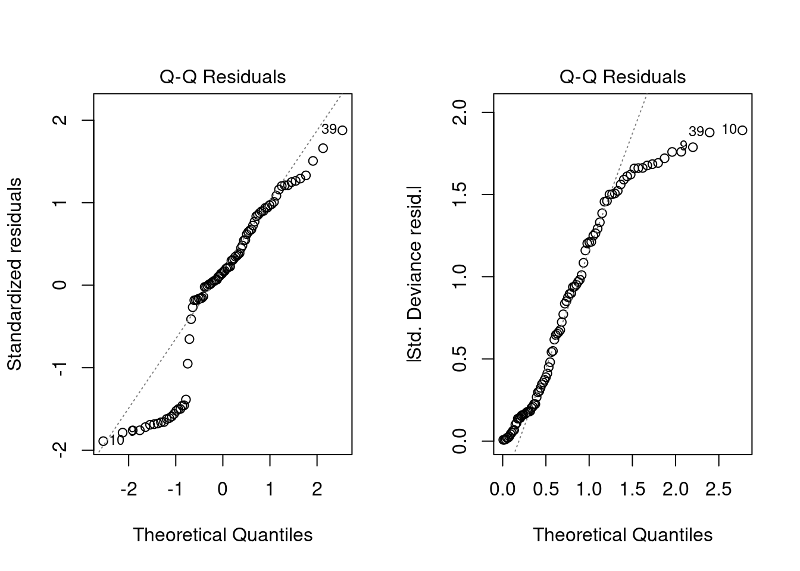
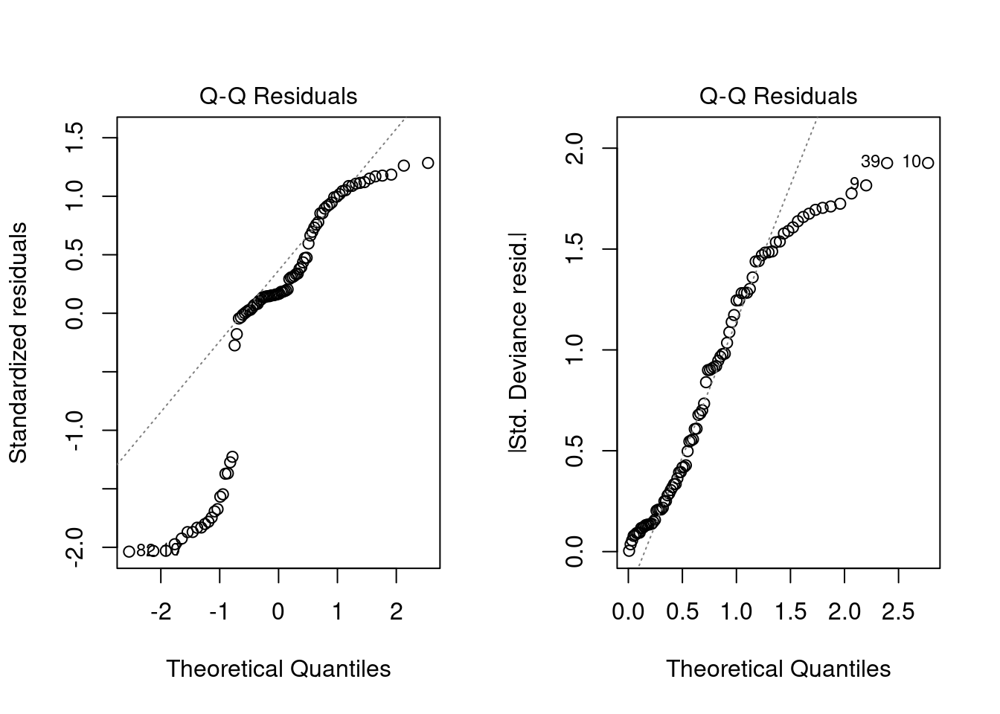
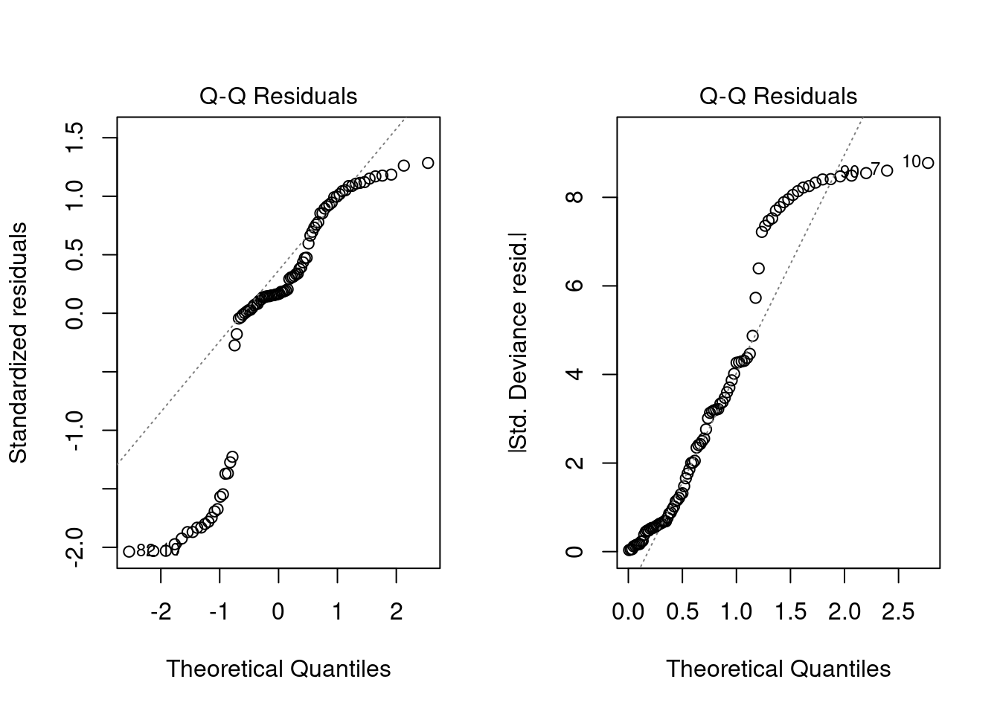
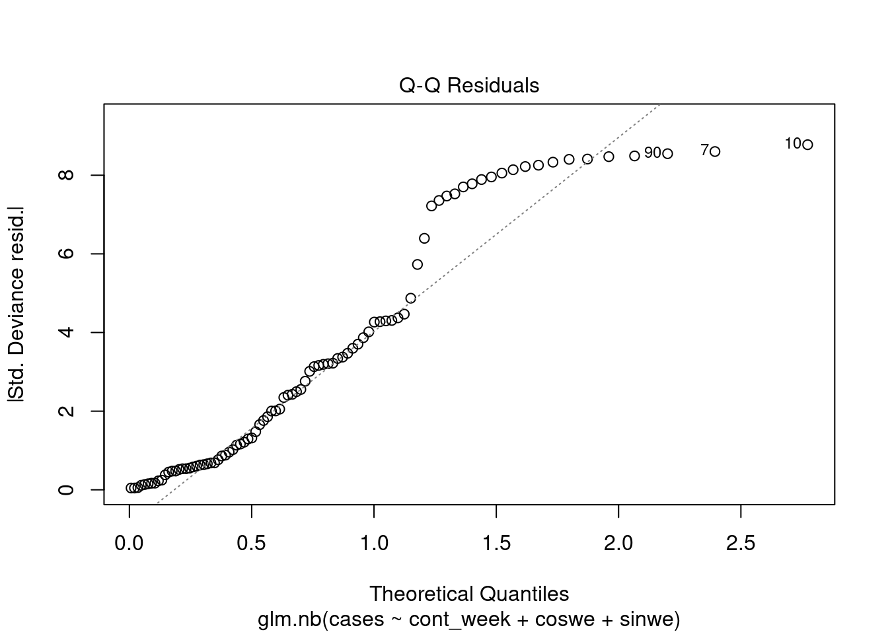

The problem. For count response data of the sort we’re going to get in IID3 it’s inevitable that they’ll be overdispersed and a simple Poisson model will fail. In the past Steve and Roy have simply transformed the response using log(n+1), the +1 needed as you can’t log zero. A number of papers, mainly in the animal ecology literature, is very critical of log(n+1) amd says it should be avoided. Here the same dataset, from IID2, is pushed through several similar models and error distributions compared.
Note: When it comes to mixed models the non-INLA choice is primarily nlme, lme4 and glmmTMB. Both nlme and glmmTMB can handle correlation structures such as AR1. lme4 and glmmmTMB can handle several error structures. Only glmmTMB can handle multiple error structures and correlation structures in a mixed-effects framework.
library(tidyr)library(dplyr)
Attaching package: 'dplyr'
The following objects are masked from 'package:stats':
filter, lag
The following objects are masked from 'package:base':
intersect, setdiff, setequal, union
This just compares lm() with glm(). Parameter estimates should be identical, but lm() uses OLS and glm() ML for parameter estimation.
enum.lm1 <-lm(cases ~ cont_week + coswe + sinwe, data = glm.data)enum.glm1 <-glm(cases ~ cont_week + coswe + sinwe, data = glm.data, family ="gaussian")
As expected, outputs identical. Check the residuals QQ plot for the GLM.
par(mfrow =c(1,2))plot(enum.lm1, which =2)plot(enum.glm1, which =2)

par(mfrow =c(1, 1))
Surprisingly, the plots are not quite the same, though both are equally awful. However, the mean, min, max etc. of the two sets of residuals is identical.
OLS log (n+1) vs ML Gaussian errors with log link
At first sight you might expect these to be the same, but they’re not. The former users the log-transformation of the response, whereas the latter is on the log-transformation of the “Expected” value (typically shown with E in the statistics books)
enum.lm2 <-lm(log(cases +1) ~ cont_week + coswe + sinwe, data = glm.data)enum.glm2 <-glm(cases ~ cont_week + coswe + sinwe, data = glm.data, family =gaussian(link ="log"))par(mfrow =c(1,2))plot(enum.lm2, which =2)plot(enum.glm2, which =2)

par(mfrow =c(1, 1))
You would expect the two sets of QQ plots to look different here, and of course the actual residuals are not the same given
OLS log (n+1) vs ML Poisson
GLM with Poisson would be the standard one to use
enum.glm3 <-glm(cases ~ cont_week + coswe + sinwe, data = glm.data, family = poisson)summary(enum.glm3)
Call:
glm(formula = cases ~ cont_week + coswe + sinwe, family = poisson,
data = glm.data)
Coefficients:
Estimate Std. Error z value Pr(>|z|)
(Intercept) 3.6101799 0.0375865 96.050 < 2e-16 ***
cont_week 0.0019763 0.0006245 3.165 0.00155 **
coswe -0.1666320 0.0232679 -7.161 7.98e-13 ***
sinwe 0.0957665 0.0242443 3.950 7.81e-05 ***
---
Signif. codes: 0 '***' 0.001 '**' 0.01 '*' 0.05 '.' 0.1 ' ' 1
(Dispersion parameter for poisson family taken to be 1)
Null deviance: 1732.4 on 89 degrees of freedom
Residual deviance: 1662.0 on 86 degrees of freedom
AIC: 2125.9
Number of Fisher Scoring iterations: 5
par(mfrow =c(1,2))plot(enum.lm2, which =2)plot(enum.glm3, which =2)

par(mfrow =c(1, 1))
Poisson’s QQ plot looks marginally better than the log(n+1) plot, but as expected the model is massively overdispersed with the residual deviance a couple of orders of magnitude bigger than the df.
Negative binomial
I’m not going to bother with a quasi-Poisson as even Ulster would say ‘no’ to that one. Some authors recommend negative binomial, which if I’ve understood the literature properly (and I might not have done!) is actually a mixture distribution, allowing the Poisson mean to vary randomly following a Gamma distribution:
library(MASS)
Attaching package: 'MASS'
The following object is masked from 'package:dplyr':
select
enum.glm4 <-glm.nb(cases ~ cont_week + coswe + sinwe, data = glm.data,control =glm.control(maxit =200))plot(enum.glm4, which =2)

However, the AIC is roughly the same as the Poisson, so unconvinced this is much better.
Negative binomial with glmmTMB
This has two types of negative binomial nbinom1 which has linear parameterization, and nbinom2 which has quadratic parameterization. Neither gives the same results as glm.nb (make of that what you will) and AIC scores much lower.
library(glmmTMB)
Warning in checkMatrixPackageVersion(): Package version inconsistency detected.
TMB was built with Matrix version 1.6.1.1
Current Matrix version is 1.6.2
Please re-install 'TMB' from source using install.packages('TMB', type = 'source') or ask CRAN for a binary version of 'TMB' matching CRAN's 'Matrix' package
As far as I can tell, there are two main types, zero-adjusted (hurdle) models, and zero-inflated models. In theory it’s the latter we want: essentially a binomial (case of iid or not) then a Poisson (how many iid). Again requires glmmTMB. Using cont_week only as the zero inflation parameter:
Well all of these are pretty rubbish. But that’s probably because they are all fixed-effects models. We really need GP and other levels in as random factors.